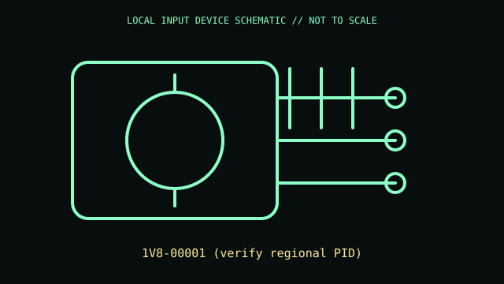

[ GAME CONTROLLERS // IDENTIFIED COMPONENT ]
Xbox Adaptive Controller
Configurable controller hub for external switches, buttons, and joysticks, intended for accessible gaming.

MODEL IDENTIFICATION: 1V8-00001 (verify regional PID). Confirm the printed SKU, revision, bundle, region, and included accessories before repair or compatibility claims.
Model specifications
| Catalog leaf | Game controllers |
|---|---|
| Exact model / identifier | 1V8-00001 (verify regional PID) |
| Mechanism and primary specifications | 22 3.5 mm switch jacks and two USB ports for external controllers; USB-C wired host connection and Xbox Wireless/Bluetooth varies by host; profile and remapping support. |
| Compatibility and interface caveats | This is distinct from Microsoft Adaptive Hub. Game/OS support and radio features depend on firmware and accessory mapping in Xbox Accessories. |
| Revision identification | Record the full label and software/firmware revision. Similar product-family names may use different protocols, components, connectors, or bundled accessories. |
Preservation and service
Store with its labeled port map and configuration; avoid strain on numerous jacks and preserve USB cable and profile records.
Separate observed condition and test setup from vendor-published specifications; record host OS, driver/app version, cables, adapters, and accessories.
Primary manufacturer sources
- Xbox Adaptive ControllerManufacturer documentation; verify the exact SKU, revision, region, and accessories against the unit label.
- Xbox Adaptive Controller supportManufacturer documentation; verify the exact SKU, revision, region, and accessories against the unit label.
Manufacturer support pages can change; retain the applicable manual and its revision in the physical equipment record.